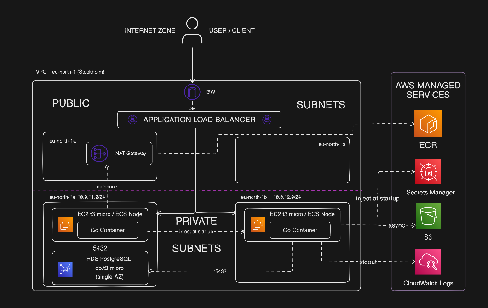

Bir projeyi AWS bulut yapısı üzerinden canlıya almak istediğim zaman container seçimim çoğunlukla ECS Fargate ya da ECS Fargate Spot oluyor. Bunun sebepleri ise aslında çok açık:
- Altyapı sorunlarının tamamını AWS'e yığıyorsunuz, bu sayede tek odak noktanız uygulamayı geliştirmek oluyor.
- Geliştirdiğiniz servis eğer ki sürekli trafik altında değilse ve maliyet açısından ucuza kaçmak istiyorsanız iyi bir seçim oluyor.
Ancak geliştirdiğimiz servisler ya da beklediğimiz trade-off'lar bazen bu kadar basit olmayabiliyor. Örneğin eğer ki istekleriniz aşağıdaki maddelerden birisiyse Fargate o kadar da iyi bir seçim olmaktan çıkıyor:
- Uygulamanız GPU veya özel donanım gereksinimi taşıyorsa Fargate kullanamıyorsunuz; örneğin ML inference, video işleme gibi.
- Uygulamanız sadece Linux container'ı üzerinde değil de Windows üzerinde de çalışacaksa Fargate'de bu çok sınırlı.
- Mevcut olarak bir EC2 yatırımınız varsa, doğrudan uygulamanızı o ECS'e kayıt etmek daha mantıklı oluyor.
- Compliance açısından regulated bir sektörde bulunuyorsanız (finans, sağlık gibi) "hangi fiziksel instance'da çalışıyor?" sorunu çok önemli.
Yani evet, bu listedeki sebeplerin her biri çok önemli olsa da ben daha basit bir merakla bu blog'u yazıyorum: Fargate'i uzun zamandır kullanıyorum ancak nasıl bir altyapı uğraşısını AWS'e yıktığımla o kadar da ilgilenmemiştim. Ürünleri geliştirmek ve dağıtıma hazır hale gelmek hem kişisel olarak hem de şirket açısından daha öncelikli oluyordu. Bu deneyi tam olarak bu yüzden kurdum, altyapıyı kurcalamak için.
Deney Gereksinimleri
Bu deneyi hem yerelde çalıştırmak hem de AWS üzerine sıfırdan kurmak için bilgisayarınızda şu araçların kurulu ve yapılandırılmış olması gerekiyor:
Lokal Geliştirme ve Altyapı Araçları
- Terraform (>= 1.10): Tüm AWS altyapısını (VPC, ECS Cluster, Auto Scaling Group, ALB, RDS PostgreSQL, S3, Secrets Manager) ayağa kaldırmak için.
- AWS CLI (v2): AWS hesabınızla iletişim kurmak, kimlik doğrulaması yapmak ve ECR'a Docker login olmak için (
aws configure). - Docker & Docker Compose:
- Go uygulamasını containerize edip ECR'a göndermek,
- Altyapıya çıkmadan önce yerelde PostgreSQL ile uygulamayı test etmek (
docker-compose up).
- Go (>= 1.23 / 1.24) (Opsiyonel): Uygulamayı container dışı çalıştırmak, unit testleri koşmak veya kodu kurcalamak isterseniz.
- curl veya HTTP Client (Postman/Bruno/vs.): ALB endpoint'ine ve API'ye test istekleri (
/notes,/health) atmak için.
2. AWS Tarafı Gereksinimleri
- Aktif bir AWS Hesabı: Gerekli kaynakları (özellikle VPC, EC2, RDS, NAT Gateway, ALB, ECR) oluşturabilecek yetkide bir IAM kullanıcısı ve Access Key'leri.
- Terraform State Bucket (S3):
provider.tfdosyasında remote state kullandığımız için önceden oluşturulmuş bir S3 bucket'ı (isterseniz geçici olarak local backend de kullanabilirsiniz).
Proje

Oluşturacağımız uygulama Golang ile yazılmış bir CRUD olacak, yapacağı tek şey istek kabul etmek ve bazı istekleri AWS SDK yoluyla belirttiğimiz S3 objesine log tutma maksadıyla göndermek.
Bulut mimarisinde ise:
- Region olarak eu-north-1 | Stockholm seçeceğiz.
- High Availability'i simüle etmek amacıyla 2 Availability Zone kullanacağız, ancak bunu sadece EC2 için uygulayacağız; RDS için bu mevcut olmayacak.
- İkişer tane Public/Private Subnet'imiz olacak.
- Her Private Subnet'de bir EC2 t3.micro instance'si çalışacak ve içerisinde oluşturduğumuz uygulamayı container olarak çalıştıracağız.
- Container'ları Elastic Container Registry (ECR)'den NAT Gateway yardımıyla çekeceğiz.
- Secrets Manager kullanarak şifre saklama simülasyonu yapacağız.
- S3 kullanarak uygulama içerisinde üretilen logları saklayacağız.
- CloudWatch Logs ile gözlemleyeceğiz.
Hands-On
Uygulama
Deneyimizin merkezinde Go ile yazılmış ve PostgreSQL ile konuşan hafif bir CRUD API yer alıyor. Ancak buradaki amacımız sıradan bir CRUD yazmak değil; altyapının gerçekten tasarlandığı gibi çalıştığını uygulamadan kanıtlamak.
Bu yüzden uygulamayı yazarken doğrudan AWS ortamı ve mimariyle konuşan 3 kritik yetenek ekledim:
"Ben Hangi AZ'deyim?"
High Availability hedefimizin tutup tutmadığını, ALB'nin istekleri iki farklı Availability Zone'a (eu-north-1a ve eu-north-1b) gerçekten dağıtıp dağıtmadığını deney adına çıplak gözle görebilmem gerekiyordu.
AWS ECS, container içine otomatik olarak ECS_CONTAINER_METADATA_URI_V4 adında bir ortam değişkeni bırakır. Uygulamamız ayağa kalktığında ve istek geldiğinde bu endpoint'e giderek hangi Task ARN ve fiziksel AZ'de çalıştığını anlık olarak öğreniyor:
// ecs_metadata.go
func getECSMeta() ECSMeta {
metaURL := os.Getenv("ECS_CONTAINER_METADATA_URI_V4")
if metaURL == "" {
return ECSMeta{TaskARN: "local", AvailabilityZone: "local"}
}
client := http.Client{Timeout: 2 * time.Second}
resp, err := client.Get(metaURL + "/task")
if err != nil {
return ECSMeta{TaskARN: "unknown", AvailabilityZone: "unknown"}
}
defer resp.Body.Close()
var meta ECSMeta
json.NewDecoder(resp.Body).Decode(&meta)
return meta
}Secrets Yönetimi
Uygulamanın dış dünyadan gelen istekleri doğrulamak için bir X-API-Key koruması var. Peki bu secret'ı container'a nasıl vereceğiz? Mimaride iki yöntemi de destekleyecek hibrit bir yapı kurdum:
- Yöntem A (Environment Injection): Terraform tarafında secret'ı doğrudan container environment'ına güvenle paslamak.
- Yöntem B (AWS SDK Secrets Manager): Uygulama boot edilirken
API_KEY_SECRET_ARNüzerinden Secrets Manager API'sini çağırıp secret değerini dinamik okumak.
// secrets.go (Özet)
func loadSecrets(ctx context.Context) (*AppSecrets, error) {
// Yöntem A: Doğrudan env olarak enjekte edildiyse
if envKey := os.Getenv("API_KEY"); envKey != "" {
return &AppSecrets{APIKey: envKey}, nil
}
// Yöntem B: ARN verildiyse AWS SDK ile Secrets Manager'dan çek
if secretArn := os.Getenv("API_KEY_SECRET_ARN"); secretArn != "" {
cfg, _ := config.LoadDefaultConfig(ctx)
client := secretsmanager.NewFromConfig(cfg)
result, err := client.GetSecretValue(ctx, &secretsmanager.GetSecretValueInput{
SecretId: &secretArn,
})
// ...
return &AppSecrets{APIKey: *result.SecretString}, nil
}
// Local geliştirme fallback'i
return &AppSecrets{APIKey: "super-secret-api-key-2026"}, nil
}S3 Audit Logger & ECS Task IAM Rolü
Uygulamaya gelen her CRUD isteğini (Request ID, IP, User-Agent, AZ, Task ARN ve yanıt süresiyle birlikte) S3 bucket'ımıza tarih bazlı hiyerarşik JSON objeleri olarak kaydediyorum: requests/YYYY/MM/DD/HH-MM-SS_<uuid>.json.
Buradaki en kritik mimari detay IAM yetkilendirmesi: Uygulamanın S3'e yazabilmesi için EC2 sunucusunun kendisine (EC2 Instance Profile) geniş yetkiler vermek yerine, sadece container'ın kendisine ECS Task Role üzerinden S3 yetkisi verdim (Least Privilege prensibi). İstek gecikmesini etkilememesi için de log yazımını bir goroutine ile asenkron yürütüyorum:
// middleware.go
go logger.WriteLog(context.Background(), entry)4. Üretim Seviyesi Dockerfile
Container imajını olabildiğince ufak (~15 MB) ve güvenli tutmak için multi-stage build ve non-root kullanıcı yaklaşımı uyguladım:
# Stage 1: Build
FROM golang:1.24-alpine AS builder
WORKDIR /src
COPY go.mod go.sum ./
RUN go mod download
COPY . .
RUN CGO_ENABLED=0 GOOS=linux GOARCH=amd64 go build -ldflags="-s -w" -o /bin/server .
# Stage 2: Runtime
FROM alpine:3.20
RUN apk --no-cache add ca-certificates wget
RUN addgroup -S appgroup && adduser -S appuser -G appgroup
WORKDIR /app
COPY --from=builder /bin/server /app/server
USER appuser
EXPOSE 8080
HEALTHCHECK --interval=30s --timeout=5s --start-period=5s --retries=3 \
CMD wget -qO- http://localhost:8080/health || exit 1
ENTRYPOINT ["/app/server"]Kaynak Kodlar: CRUD handler'ları, veritabanı migration'ları ve yerel PostgreSQL test ortamı (
docker-compose.yml) dahil projenin tüm kaynak kodlarına GitHub Reposu üzerinden ulaşabilirsiniz.
Altyapı (Terraform)
Mimariyi oluştururken temel önceliğim yüksek erişilebilirlik (Multi-AZ), sıfır doğrudan internet erişimi (Private Subnetler) ve akıllı kaynak dağıtımı oldu.
1. Ağ Yapısı ve Subnet Dağıtımı
Tüm altyapıyı Stockholm (eu-north-1) bölgesinde ve 2 farklı Availability Zone (eu-north-1a ve eu-north-1b) üzerinde kurguladım:
- 2 Adet Public Subnet: Yalnızca dış dünyayı karşılayan Application Load Balancer (ALB) ve giden trafiğe çıkış sağlayan NAT Gateway bu subnet'lerde barınıyor.
- 2 Adet Private Subnet: EC2 instance'larımız ve RDS veritabanımız bu subnet'lerde yer alıyor.
Kritik Güvenlik Kuralı: EC2 sunucularına kesinlikle Public IP atanmıyor (
associate_public_ip_address = false). Dış dünyadan sunuculara doğrudan erişim imkansız; sadece ALB'den gelen trafiği kabul ediyorlar. Dışarıya olan internet ihtiyaçlarını (ECR'dan imaj çekmek, SSM ile konuşmak) ise tek bir NAT Gateway üzerinden karşılıyorlar.
2. EC2 Filosu: Bir EC2 Sunucusu Nasıl "ECS Worker"ı Olur?
Bir EC2 sunucusunu başlatıp içine rastgele Docker kurmak onu bir ECS Cluster'ın işçisi yapmaya yetmez. Burada birbiriyle kenetlenen 3 kritik bileşen kullandım:
A. En Güncel ECS-Optimized AMI'yi Dinamik Çekmek
Hardcoded (statik) bir AMI ID'si yazmak altyapıyı hızla eskitir. Bunun yerine AWS Systems Manager (SSM) Parameter Store üzerinden AWS'in önerdiği en güncel Amazon Linux 2023 ECS-Optimized imajını dinamik çektim:
# asg.tf
data "aws_ssm_parameter" "ecs_ami" {
name = "/aws/service/ecs/optimized-ami/amazon-linux-2023/recommended/image_id"
}Bu AMI'nin içinde Docker engine, AWS ECS Agent ve gerekli daemon'lar önceden kurulu ve optimize edilmiş olarak geliyor.
B. Launch Template ve User Data
EC2'lerin hangi özelliklerle ayağa kalkacağını tanımladığımız Launch Template üzerinde iki kritik karar aldım:
- SSH (Port 22) Portunu Tamamen Kapatmak: Sunuculara SSH anahtarı tanımlamadım ve Security Group'ta port 22'yi açmadım. Sunucu içine girmek gerekirse
AmazonSSMManagedInstanceCoreIAM yetkisi sayesinde AWS Systems Manager (SSM) Session Manager üzerinden tarayıcıdan/CLI'dan güvenli shell oturumu açıyoruz. - Cluster Kaydı (User Data): EC2 ayağa kalktığında içindeki ECS Agent'ın "Ben kime hizmet edeceğim?" sorusunun cevabını User Data ile veriyoruz:
# asg.tf
resource "aws_launch_template" "ecs_lt" {
name_prefix = "go-experiment-ecs-lt-"
image_id = data.aws_ssm_parameter.ecs_ami.value
instance_type = "t3.micro"
iam_instance_profile {
arn = aws_iam_instance_profile.ecs_instance_profile.arn
}
network_interfaces {
associate_public_ip_address = false
security_groups = [aws_security_group.ecs_ec2_sg.id]
}
# ECS Agent'a hangi cluster'a kaydolacağını bildiren sihirli satır:
user_data = base64encode(<<-EOF
#!/bin/bash
echo "ECS_CLUSTER=${var.ecs_cluster_name}" >> /etc/ecs/ecs.config
EOF
)
}C. Auto Scaling Group (ASG) & Multi-AZ Dağıtımı
EC2 sunucularının fiziksel olarak nerede yaşayacağını ASG yönetiyor:
# asg.tf
resource "aws_autoscaling_group" "ecs_asg" {
name_prefix = "go-experiment-asg-"
vpc_zone_identifier = [aws_subnet.private_1a.id, aws_subnet.private_1b.id]
min_size = 1
desired_capacity = 2
max_size = 4
launch_template {
id = aws_launch_template.ecs_lt.id
version = "$Latest"
}
tag {
key = "AmazonECSManaged"
value = "true"
propagate_at_launch = true
}
}vpc_zone_identifier: ASG'ye iki farklı Private Subnet verdik. ASGdesired_capacity = 2olduğunda sunucuları otomatik olarak bir taneeu-north-1a'ya, bir tane deeu-north-1b'ye yerleştirir.AmazonECSManaged = true: ECS Capacity Provider'ın bu ASG'yi otomatik olarak ölçekleyebilmesi için zorunlu AWS etiketidir.
3. ECS Capacity Provider & Task Dağıtım Stratejisi (Placement Strategy)
EC2 sunucuları hazır, peki container'lar bu sunuculara nasıl yerleştirilecek?
A. ECS Capacity Provider (Kapasite Köprüsü)
ASG ile ECS Cluster arasına Capacity Provider koyarak ECS'in sunucu ihtiyacını otomatik yönetmesini sağladım:
# ecs.tf
resource "aws_ecs_capacity_provider" "main" {
name = "go-experiment-capacity-provider"
auto_scaling_group_provider {
auto_scaling_group_arn = aws_autoscaling_group.ecs_asg.arn
managed_scaling {
status = "ENABLED"
target_capacity = 100
}
}
}Bu sayede eğer yarın ECS Service'imizdeki task sayısını 2'den 6'ya çıkarırsak, ECS Cluster kapasite yetersizliğini anlayıp ASG'ye "Bana yeni EC2 aç" emrini kendisi verebiliyor.
B. Multi-AZ Spread (Availability Zone Dağıtımı)
En kritik deney noktalarından biri: Container'larımızın iki farklı AZ'deki iki farklı EC2'ye eşit dağılmasını garanti altına almak.
Bunu ECS Service üzerinde tanımladığımız ordered_placement_strategy ile sağladım:
# ecs.tf
resource "aws_ecs_service" "app" {
name = "go-crud-service"
cluster = aws_ecs_cluster.main.id
task_definition = aws_ecs_task_definition.app.arn
desired_count = 2
# Task'ları rastgele koyma, Availability Zone'lara eşit dağıt:
ordered_placement_strategy {
type = "spread"
field = "attribute:ecs.availability-zone"
}
load_balancer {
target_group_arn = aws_lb_target_group.app_tg.arn
container_name = "go-crud-app"
container_port = 8080
}
}type = "spread" ve field = "attribute:ecs.availability-zone" kuralı sayesinde ECS scheduler, 1. task'ı A bölgesindeki EC2'ye, 2. task'ı ise B bölgesindeki EC2'ye zorunlu olarak dağıtır. Stockholm'ün bir veri merkezi havaya uçsa bile uygulamamız sıfır kesintiyle çalışmaya devam eder.
4. Dynamic Port Mapping & Security Group İzolasyonu
EC2 üzerinde container koştururken karşılaşılan en klasik sorun port çakışmasıdır. Tek bir EC2'de birden fazla container çalışırsa (örneğin rolling update sırasında yeni container eskisinin yanına açıldığında), ikisi de aynı anda 8080 portunu dinleyemez.
Bunu çözmek için Dynamic Port Mapping kullandım:
# ecs.tf (Task Definition)
network_mode = "bridge"
portMappings = [
{
containerPort = 8080
hostPort = 0 # 0 verilince Docker EC2 üzerinde dinamik rastgele bir port tahsis eder!
protocol = "tcp"
}
]hostPort = 0 tanımlandığında Docker, host üzerinde ephemeral aralıktan (32768 - 65535) rastgele bir port açar (örneğin 38491 ve 49152). ECS Agent bu portu otomatik olarak Application Load Balancer Target Group'una bildirir. ALB de gelen trafiği bu dinamik portlara sorunsuz iletir.
Security Group İncisi (SG Referencing)
Peki güvenlik grubunda bu geniş port aralığını (32768-65535) internete mi açacağız? Kesinlikle hayır.
# security_groups.tf
resource "aws_security_group" "ecs_ec2_sg" {
name = "go-experiment-ecs-ec2-sg"
vpc_id = aws_vpc.main.id
# Sadece ve sadece ALB Security Group'undan gelen dinamik portlara izin ver:
ingress {
from_port = 32768
to_port = 65535
protocol = "tcp"
security_groups = [aws_security_group.alb_sg.id] # SG Referencing!
}
}IP adresi ya da CIDR bloğu yerine doğrudan security_groups = [aws_security_group.alb_sg.id] referansı verdik. Bu sayede VPC içindeki başka hiçbir sunucu veya dış internet bu portlara erişemez; sadece ALB erişebilir.
5. IAM Rollerinin Hassas Ayrımı (3 Farklı Rol)
Fargate'te genellikle 2 rol konuşulurken EC2 on ECS dünyasında 3 farklı IAM aktörü bulunur:
- EC2 Instance Profile (
AmazonEC2ContainerServiceforEC2Role+AmazonSSMManagedInstanceCore): EC2 sunucusunun kendi kimliğidir. Sadece ECS Agent'ın cluster ile el sıkışması ve bizim SSM üzerinden SSH'sız sunucuya bağlanabilmemiz içindir. - ECS Task Execution Role: Container henüz ayağa kalkarken ECS Control Plane tarafından kullanılır. ECR'dan imajı çeker, CloudWatch'a log grubunu açar ve Secrets Manager'dan şifreleri alıp ortama aktarır.
- ECS Task Role: Container'ın içinde çalışan Go kodumuzun kendi kimliğidir. Kodumuzun S3 bucket'ına log basabilmesi için sadece bu role S3 PutObject yetkisi verdik. Sunucu (EC2) S3'e erişemez ama içindeki container erişebilir.
Dağıtım ve Çalıştırma (Deployment)
ECS Service'in sağlıklı bir şekilde container'ları başlatabilmesi için ECR'da derlenmiş bir Docker imajının bulunması gerekir. Ancak o ECR deposunu da henüz Terraform oluşturmadı.
1. ECR ve Temel Altyapının Kurulması
Öncelikle Terraform ile altyapıyı ayağa kaldırıyoruz:
cd terraform
terraform init
terraform applyTerraform çalıştığında bize uygulamanın ECR adresini ve ALB DNS adresini çıktı (output) olarak veriyor:
Outputs:
alb_dns_name = "go-experiment-alb-783582650.eu-north-1.elb.amazonaws.com"
ecr_repository_url = "783582650549.dkr.ecr.eu-north-1.amazonaws.com/go-experiment-ecr-repo"
s3_request_logs_bucket = "go-experiment-request-logs-783582650549"2. Docker İmajının Derlenmesi ve ECR'a Gönderilmesi
ECR repomuz oluştuktan sonra Go uygulamamızı build edip AWS'e push'luyoruz:
# ECR'a Docker login olmak
aws ecr get-login-password --region eu-north-1 | docker login --username AWS --password-stdin 783582650549.dkr.ecr.eu-north-1.amazonaws.com
# İmajı build etmek ve etiketlemek
docker build -t go-crud-app ../app
docker tag go-crud-app:latest 783582650549.dkr.ecr.eu-north-1.amazonaws.com/go-experiment-ecr-repo:latest
# ECR'a push'lamak
docker push 783582650549.dkr.ecr.eu-north-1.amazonaws.com/go-experiment-ecr-repo:latestİmaj ECR'a ulaştığı anda, arka tarafta bekleyen ECS Service yeni task'ları çekmeye başlar ve iki EC2 instance'ımız üzerinde container'larımız canlıya geçer.
Deneyin Doğrulanması (Verification)
1. Test: Multi-AZ ve Load Balancing Kanıtı
Stockholm bölgesindeki 2 farklı Availability Zone'a (eu-north-1a ve eu-north-1b) kurduğumuz EC2'lerin ve container'ların trafiği eşit paylaştığını doğrulamak için ALB DNS adresine peş peşe iki istek atıyoruz:
# 1. İstek
curl -i -H "X-API-Key: super-secret-api-key-2026" \
http://go-experiment-alb-783582650.eu-north-1.elb.amazonaws.com/itemsCloudWatch loglarına veya uygulamanın ürettiği log kaydına baktığımızda:
[INIT] ECS Task: arn:aws:ecs:eu-north-1:...:task/go-experiment-cluster/9a1b2c3d | AZ: eu-north-1a
[AUTH] OK - GET /items
[S3LOG] Yazıldı: s3://go-experiment-request-logs-.../requests/2026/10/23/15-40-12_uuid1.jsonHemen ardından 2. isteği gönderiyoruz:
# 2. İstek
curl -i -H "X-API-Key: super-secret-api-key-2026" \
http://go-experiment-alb-783582650.eu-north-1.elb.amazonaws.com/itemsVe ikinci isteğin karşılandığı yer:
[INIT] ECS Task: arn:aws:ecs:eu-north-1:...:task/go-experiment-cluster/4e5f6a7b | AZ: eu-north-1b
[AUTH] OK - GET /items
[S3LOG] Yazıldı: s3://go-experiment-request-logs-.../requests/2026/10/23/15-40-14_uuid2.jsonSonuç: Application Load Balancer, eu-north-1a ve eu-north-1b subnet'lerinde yaşayan iki farklı t3.micro sunucumuza trafiği kusursuz şekilde paylaştırdı.
2. Test: API Key Güvenlik Doğrulaması
Middleware mekanizmamızın çalıştığını teyit etmek için anahtarsız ve hatalı istekleri test ediyoruz:
# Header olmadan istek atıldığında:
curl -i http://go-experiment-alb-783582650.eu-north-1.elb.amazonaws.com/items
# HTTP/1.1 401 Unauthorized
# {"error":"missing X-API-Key header"}
# Yanlış anahtarla istek atıldığında:
curl -i -H "X-API-Key: wrong-key" http://go-experiment-alb-783582650.eu-north-1.elb.amazonaws.com/items
# HTTP/1.1 403 Forbidden
# {"error":"invalid API key"}3. Test: S3 Audit Logger & Task Role Yetkilendirmesi
Uygulamanın EC2 sunucu yetkilerine ihtiyaç duymadan, yalnızca kendi ECS Task Role'ü üzerinden S3'e yazıp yazamadığını AWS CLI ile bucket içeriğini listeleyerek doğruluyoruz:
aws s3 ls s3://go-experiment-request-logs-783582650549/requests/2026/10/23/ --recursiveÇıktıda isteklerimizin tarih hiyerarşisiyle kaydedildiğini görüyoruz:
2026-10-23 15:40:12 342 requests/2026/10/23/15-40-12_uuid1.json
2026-10-23 15:40:14 345 requests/2026/10/23/15-40-14_uuid2.jsonObjelerden birini indirip içeriğini incelediğimizde:
{
"request_id": "c71a3964-b52e-4e4f-b6e8-234e402b918a",
"timestamp": "2026-10-23T12:40:12.31298412Z",
"method": "GET",
"path": "/items",
"source_ip": "10.0.1.45:49182",
"user_agent": "curl/8.5.0",
"api_key_hint": "supe***2026",
"response_ms": 12,
"status_code": 200,
"ecs_task_id": "arn:aws:ecs:eu-north-1:783582650549:task/go-experiment-cluster/9a1b2c3d",
"az": "eu-north-1a"
}Uygulamamız çalıştığı fiziksel lokasyonu, harcanan milisaniyeyi ve maskelenmiş anahtar ipucunu S3'e başarıyla kaydetmiş durumda.
Temizlik (Maliyet Kontrolü)
Bu bir öğrenme ve kurcalama deneyi olduğu için arkamızda çalışan pahalı kaynaklar bırakmamak çok önemli. Özellikle NAT Gateway (aylık ~$32) ve Application Load Balancer (aylık ~$16) gibi kaynaklar trafik olmasa dahi saatlik ücrete tabidir.
Deney bittikten sonra tüm altyapıyı temizliyoruz:
cd terraform
terraform destroy -auto-approveSonuç
Yazının başına dönersek: ECS Fargate varken neden EC2 on ECS kullanalım?
Bu deneyi kurup tamamladıktan sonra edindiğim en somut çıkarımlar şunlar oldu:
- Fargate'in Kıymetini Anlamak: Fargate kullandığımızda aslında arkada ne kadar devasa bir mühendislik yükünden kurtulduğumuzu bizzat gördüm. AMI sürümlerini güncellemek, ECS Agent konfigürasyonu yapmak, Launch Template hazırlamak, Dynamic Port çakışmalarını yönetmek ve Capacity Provider ayarlamak zorunda kalmamak harika bir konfor.
- EC2 on ECS Ne Zaman Vazgeçilmez?
- Maliyet ve Rezervasyon: Eğer şirketinizin halihazırda taahhüt edilmiş EC2 Reserved Instances ya da Savings Plans yatırımları varsa, Fargate yerine bu sunucuları ECS Cluster'ına bağlamak devasa bir maliyet avantajı sağlar.
- Özel Donanım & GPU: Machine learning modelleri koşturuyorsanız veya GPU instance'larına ihtiyacınız varsa Fargate sınırlı kalabilir; kontrolün tamamen sizde olduğu EC2 şarttır.
- Kernel & Ağ Optimizasyonu: İşletim sistemi seviyesinde kernel parametrelerine müdahale etmek (
sysctl), özel disk mount'ları yapmak gerekiyorsa EC2 tek yoldur.
Özetle; ürün geliştirmeye ve hıza odaklanıyorsanız Fargate, altyapı maliyetini kuruşu kuruşuna optimize etmek veya özel donanım sınırlarını zorlamak istiyorsanız EC2 on ECS doğru araçtır.
Benim için Fargate'in perde arkasında neleri sırtlandığını görmek ve bu çarkları tek tek elle kurmak çok öğretici bir deneyim oldu.
Okuduğunuz için teşekkür ederim.